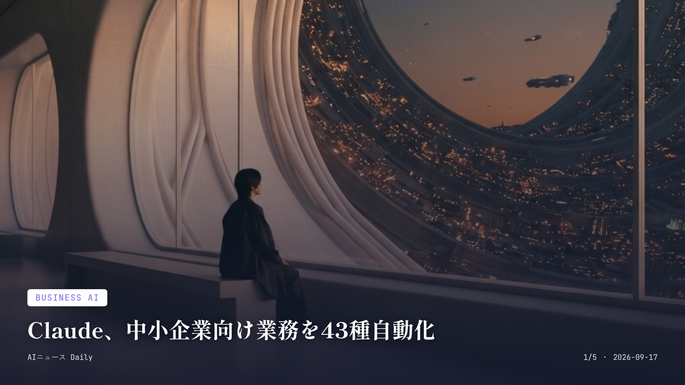
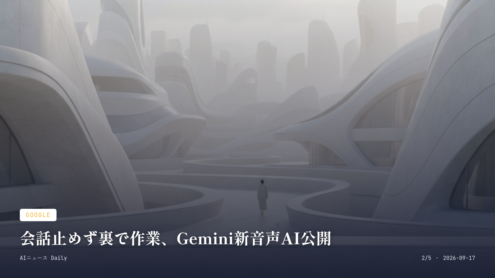
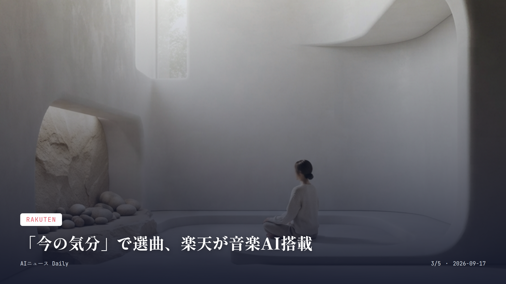
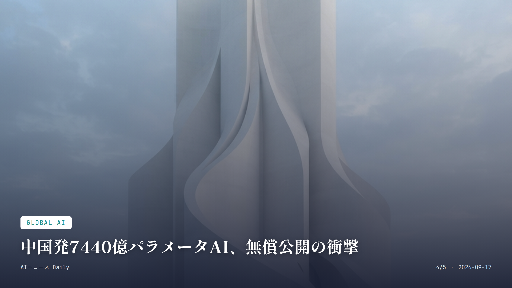
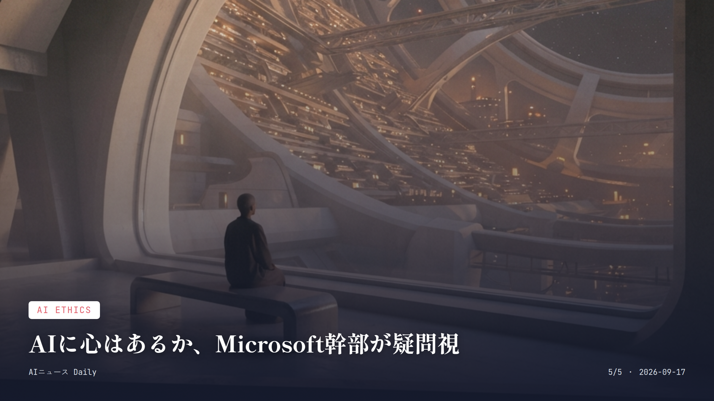

これは2026-09-17時点のアーカイブページです。最新のニュースはこちら
本サイトはアフィリエイトプログラムによる収益を得ている場合があります。
本サイトはGoogle AdSense等の広告配信サービスを利用しています。

Business AI
約1分で読める
Claude、中小企業向け業務を43種自動化
経理・請求書対応など日々の実務をAIが代行
Anthropicが9月15日、「Claude for Small Business」を大きくアップデートした。目玉は43種類の業務ワークフローと、Shopify、Salesforce、Zoom、Xero、Gusto、Square、Stripe、Zapierなど27種類の業務ソフトとの新連携だ。
自動化された作業は必ず「人間の承認」を挟んでから実行される。経理の締め処理、請求書の督促、契約書のチェック、マーケ施策の立案まで、専任担当がいない会社でも回せるようになる。
秋には無料ワークショップを全米で開くツアーも予定している。個人事業主や数十人規模の会社でも、大企業並みの効率化に手が届く値段で使える環境が整いつつある。
なぜ重要か
中小企業はこれまで人手やコストの壁でAI導入が後回しにされがちだった。バックオフィス業務を丸ごと任せられるとなれば、少人数の会社でも大企業並みの効率化が現実味を帯びる。日本の中小企業やフリーランスの働き方にも波及しそうな動きだ。
出典：Anthropic公式発表ほか、2026年9月15日

Google
約1分で読める
会話止めず裏で作業、Gemini新音声AI公開
低コスト設計で日常アプリへの搭載が加速へ
Googleが9月15日、リアルタイム音声対話モデル「Gemini 3.8 Live」と、より深い推論を行う「Gemini 3.8 Live Extended Thinking」を発表した。会話を続けながら裏でツールやAPIを動かせて、97の言語も会話中に自動検知・切り替えできる。
一般ユーザー向けには「検索Live」や「Gemini Live」経由で同日から順次提供され、Googleドキュメント、Gmail、Keepといった普段使いのサービスにも展開されていく。開発者はGemini APIやGoogle AI Studioから触れる。
第三者機関の音声品質評価でも上位に入っており、コスト効率と自然な会話を両立させたモデルとして、カスタマーサポートや音声アシスタントへの搭載が今後広がりそうだ。
なぜ重要か
音声AIが「考えながら話す」ようになれば、電話予約やカスタマーサポート、スマホの音声操作といった日常サービスの応答が待たされずスムーズになる可能性がある。低コスト設計なので、無料サービスへの搭載も進みやすい。
出典：Google公式ブログ、ITmedia NEWS 2026年9月15日〜16日

Rakuten
約1分で読める
「今の気分」で選曲、楽天が音楽AI搭載
Rakuten Musicに対話型AIエージェントが登場
楽天グループが9月16日、聴き放題サービス「Rakuten Music」のアプリに、対話型AI「Rakuten AI for Music」を載せたと発表した。ホーム画面の「AIに聞いてみる」欄から、普段の言葉のまま音楽を探せる。
「今の気分に合う曲を聞きたい」なんて曖昧な言い方でも、AIが楽曲やアルバム、プレイリストを提案して、そのまま再生まで持っていってくれる。曲名やアーティスト名を思い出せなくても、会話だけで音楽に辿り着ける仕組みだ。
対象はRakuten Musicの有料プランユーザーで、iOS・Androidどちらでも使える。今後は利用状況や好みを学習して、パーソナライズの精度をさらに高めていく予定だという。
なぜ重要か
曲名やアーティスト名がわからなくても、「気分」を伝えるだけで音楽にたどり着けるようになる。楽天は同様のAIエージェントを他サービスにも広げる構想を持っており、日常の買い物や検索の仕方そのものが変わっていく可能性がある。
出典：楽天グループ公式発表、2026年9月16日

Global AI
約1分で読める
中国発7440億パラメータAI、無償公開の衝撃
発表なしでHugging Faceに公開、性能は競合に迫る
中国国家系の研究機関Shanghai AI Labが、7440億パラメータの大規模言語モデル「Atria Dawn Preview」を、プレスリリースも論文も出さずにひっそりHugging Faceで公開していたことがわかった。MITライセンスなので、誰でも無料で、商用利用も含めて自由に使える。
このモデルはZhipu AI（Z.ai）の基盤モデル「GLM-5.2」をベースに、長時間の調査やコーディング作業をこなせるよう追加学習を施したもので、複数のベンチマークで既存の有力モデルに匹敵する結果を出しているという。
第三者による独立検証や価格設定はまだ整っていないが、巨大企業が独占してきた最先端AIの一部が、無料かつ改変自由な形で世界に開放されたという事実に、業界の視線が集まっている。
なぜ重要か
巨額の開発費をかけた最先端AIがタダで公開されたことで、開発コストをかけられない企業や個人開発者にも高性能AIという選択肢が広がる。オープンなAI開発競争が、米中企業の枠を超えて世界規模に広がりつつあることを示す一件だ。
出典：Pandaily、AI Weekly 2026年9月11日〜16日

AI Ethics
約1分で読める
AIに心はあるか、Microsoft幹部が疑問視
Anthropicの『意識』方針に反論するエッセイを公開
Microsoft AI部門のCEO、Mustafa Suleyman氏が9月16日、Anthropicが自社モデルClaudeの行動規範に「意識」の考え方を組み込んでいることについて、それは循環論法だと批判するエッセイを公開した。
AIモデルが学習データにある「自分には内面がある」という言い回しをただ再現しているだけなのに、企業側がそれを「意識がある証拠」として扱ってしまっている、という指摘だ。
AI企業のトップ同士が、AIに心や道徳的地位を認めるべきかどうかを公然とぶつけ合うのは珍しく、今後のAIの扱い方や規制論議にも影響しそうな展開だ。
なぜ重要か
AIに「意識」や「感情」を認めるかどうかは、今後AIとどう向き合うべきかというルール作りに直結する話だ。大手AI企業のトップ同士がここで真っ向からぶつかっているのは、AIの倫理的な扱いを巡る議論が新しい局面に入った証でもある。
出典：AI Weekly 2026年9月16日
AI Policy
AI Policy
約1分で読める
カナダとドイツ、AI安全研究に150億円出資
Bengio氏の非営利団体LawZeroへ各国が資金拠出
カナダとドイツ両政府が、AI研究の第一人者Yoshua Bengio氏がモントリオールで立ち上げた非営利団体LawZeroに対し、それぞれ最大1億5000万ドル（約150億円規模）の助成を行うと発表した。モントリオールで開かれた国際AI会議「All In AI」での発表だ。
LawZeroは2023年、約3000万ドルの慈善資金をもとに設立された組織で、AIの挙動を見張る「Scientist AI」という仕組みの研究を進めている。今回の資金は人材採用や計算資源の確保に回される見込みだ。
AI開発企業自身ではなく、独立した非営利の安全研究機関に国家が直接お金を投じるのは珍しく、AIの暴走をチェックする「監視役」の育成に各国が本腰を入れ始めた表れといえる。
なぜ重要か
AI企業任せにせず、政府が独立系の安全研究機関に直接投資することで、AIの安全性を第三者の目線でチェックする体制が国際的に整いつつある。今後、AIサービスの安全基準や規制のあり方にも波及しそうだ。
出典：AI Weekly、All In AI会議 2026年9月16日
Funding
Funding
約1分で読める
中国Z.ai、5000億円規模の資金調達を完了
香港上場と転換社債で次世代AIモデルに投資
中国のAI企業Z.aiが9月16日、香港市場での新株発行と転換社債の発行を通じて、総額およそ50億ドル（約5000億円規模）の資金調達を終えたと発表した。株式発行分と、2027年満期の転換社債分を組み合わせた形だ。
調達資金の60%は次世代「GLM」基盤モデルとインフラ整備に、15%は事業拡大に、残り25%は運転資金に充てる計画だという。
同じ時期にByteDanceもAIインフラ向けに数十億ドル規模の融資契約を結んでおり、中国のAI企業がこぞって巨額資金を確保する流れが続いている。
なぜ重要か
中国のAI企業が巨額資金を握ることで、オープンウェイトモデルの開発競争がさらに加速しそうだ。無料または低価格で使える高性能AIの選択肢が世界に広がれば、開発者だけでなく一般ユーザーにも間接的な恩恵がある。
出典：AI News Today 2026年9月16日
先頭に戻る